モンユアの栄螺堂！？（栄螺堂とは何じゃい、という方はここをクリック！）
モンユアのタウンボウディーにて発見した塔。呼び名がわからないので五重塔と呼ばせていただく。
遠目に見ただけで怪しさが伝わってくる。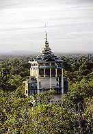
基本的にはコンクリートによるフレームにビルマ建築風の屋根を乗っけたものなのだが、その構造的な複雑さは行き当たりばったり的に増築された3つの空中小屋によってさらにパワーアップされている。
この塔の内部に入った時、私はかなり興奮した。何故ならこの塔はズバリ「ミャンマー版栄螺堂なのではないか」と直感したからである。
かなり曖昧な記憶と何枚かの写真と希望的観測から平面図をつくってみました。
・・・ややこしいので覚悟するように・・・
先に説明しておくと上が東、下が西、←DNは下りの階段、←UPは上りの階段。但しこの場合、順路を説明するものではなく、単に階段の上がり下りの方向を示しているものだから気を付けてね。
各階の平面は基本的に東西二ケ所の階段から成っている。
形的には四方正面となっているがメインの参道に面している点、西側（図では下になる）の入り口にのみ屋根の架かっている点を考慮し、ここでは一応、西側をメインの入り口とさせていただく。
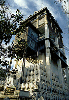
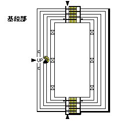
基段はコンクリート造（もしかしたらレンガ造）である。
西側入り口（図では下の入り口）から入る。迷路的な演出なのかわざと折り返しの多い階段となっている。
北（左）側には増築小部屋の最下階（レベル的には１階）に直通する螺旋階段がある。
下から見上げると後付けの小部屋の柱は華奢である。構造的に大丈夫なんだろうか。
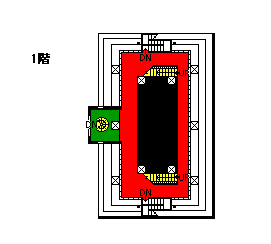
何回も折り返し続ける階段を上りきると1階レベルに到る。
上へ行くには上りきったところの目の前にある鉄砲階段へ。
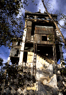←中央の増築小屋のすぐ下の白い部分が鉄砲階段。
北（左）側の部屋へ行くには鉄砲階段手前の通路、図では赤い部分を通って行く。
ただしこの部屋は下から螺旋階段で直接来られるもののその螺旋階段は上のレベルの部屋には行っておらず、この塔全体が立体迷路となっているのに、なんとなく全体の動線の流れから浮いていて、「ここだけ別物」という感じの部屋だった。
なにか別の用途に使われたのだろうか、ってこの塔の用途自体、よく判らないのに・・・
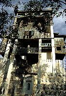←塔の北面。螺旋階段が上の階まで延びている。
 ←1階レベルの北（左）側の部屋。下からの螺旋階段はここで終わっている。
←1階レベルの北（左）側の部屋。下からの螺旋階段はここで終わっている。
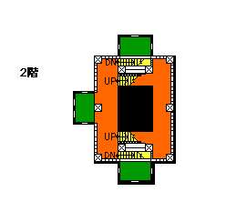
鉄砲階段を上ると、左側に小部屋が見えてくる。この部屋は階段の真横にあるので通路がない。
従って部屋に行くには階段を上りきった時点で足を伸ばして強引にはいるか、階段の途中から手を伸ばして部屋の縁に手を掛け、懸垂状態で登るしかない。いずれにしても半分腐った床なので勇気のいる行動だ。
順路としては一番西（下）の階段から登ってきて2階に至り、そのまま折り返すように3階へ至る階段を登って行く。
もちろん北（左）側の小部屋が見たい人は3階に行く前に何歩か歩けば良い。ただし中には何もないが。
この階はどう言う訳か全体の階高が低い、従って3階へ至る階段は段数がすくない。
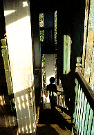←右手が増築小部屋。鉄砲階段の途中にあるのがお判りだろうか。柱の左に3階への階段が見える。
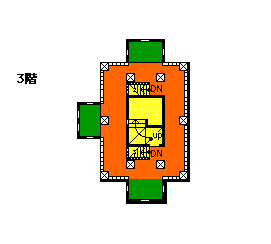
数える程の段数の階段を登ると3階。
この階から上に行くには中央の周り階段を使う。
この部分だけが階段が一ケ所しかない。他の階は全て東西に同じ形式の階段を配してあるのに。
単に変化を付けようとしたものなのか。その真意は謎である。
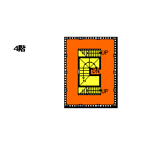
壁に覆われた周り階段は明かり取りが一つしかなく薄暗い。
上りきると4階だ。そこはチークの格子に囲まれた空間だ。
再び西（下）側の階段を上る。
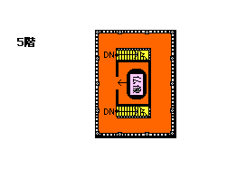
で、最上階。
増築空中小屋を除けばこの建物で唯一の部屋はこの階の中央にあり、丁度回り階段の真上に当たる。
外側は黄色くペイントされており明らかに特別な部屋として差別化されている。
中は確か仏像があったように記憶しているが、ハッキリとした事は憶えていない。
ここから見下ろしたボディータタウンの全容があまりにも凄かった為である。
巨大寝釈迦、大仏、仏塔、そして数えきれない程の仏像がパノラマ状態で目に飛び込んできたのである。
帰りは東側の階段を下って行けば入り口とは反対側の東の出口に至る。
これでこの五重塔のツアーは終了、という具合だ。

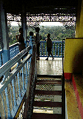←最上階。軒下は細かい装飾が施されている。階段の向こうに4階の格子が見える。
さて。
この塔の外観の異様さもさることながら、ここで問題にしたいのは、この塔が建てられた設計コンセプトである。
そして最大の謎は「この塔は栄螺堂なんだろうか」ということである。
以下、妄想をかなり織りまぜながら私見を述べさせて頂く。
恐らくこの塔はボディータタウン全域を眺めるビューポイントとして建てられたのであろう。多分それは間違いない。
そしてこの塔の南側にもう一つ円柱状の塔がある。この円柱状の塔も境内全域を眺めるためのものである。

この円柱塔は五重塔よりも建設時期が新しいようだ。
ということは五重塔をバージョンアップさせて円柱塔を建てた、ということになる。
そしてその円柱の塔は内部全体が単螺旋階段になっている。
とすれば五重塔の方も「螺旋的な参詣客の動き」というものをかなり意識している筈である。
この地方にはマンダレーの旧王宮の監視塔やインワの監視塔など古くから螺旋階段を持つ展望台が多い、というより展望台といえば基本的には螺旋構造なのだ。
この五重塔もこれらの塔の影響があるとすれば螺旋構造の動線である、と考えた方が自然ではなかろうか。
しかし、この塔の特異な点はそれらの単螺旋の動線構造ではなく、二重螺旋による動線処理を考えたところだ。
そもそも本邦の栄螺堂というのは参詣路が一方通行でかつ多層（通常は3層）建築であるという事と同時に参詣客の動線が基本的に二重螺旋を描いている事が最大の特徴であり、そこに建築空間としての特異性と魅力があるわけだが、この五重塔、もう一度平面を見ていると、単に西側の階段を上って逆側の階段を下りるだけなのではなく、もしかしたら東西に配置された階段を交互に上って行くものだったのかも知れない。
例えば1階から2階へは西側の階段、2階から3階へは東側の階段、というように。
もし、そうであれば「同じ道を通らず」「一方通行で」「入り口と反対側の出口に」至るルートが不完全ながら組み立て可能だ。いや、むしろこちらのルートの方が後付けされた北側の小部屋を回るには合理的ですらある。何故わざわざ東西2ケ所に同じような階段をつけたのか、という理由も説明できる。
極めて不完全な形ながら栄螺堂のような一方通行による立体参詣を可能にしている。かなり苦しいが。
それは奇しくも日本において同じような必要性（眺望を得るための多層構造＋客を捌くための一方通行による見流し型参詣路の確立）から生まれた栄螺堂と良く似た空間を有していたのだ、と言えまいか。
勿論、日本の栄螺堂とこのミャンマーの塔はお互いに影響を受けたことは考えにくい。
詳しい資料や情報が一切ないので断言は出来ないのだが。
しかし、「何故栄螺堂などという特殊な建築がこの世に出現したのか」という私にとっての永遠の命題はここにその答えの一端があるように思えた。
栄螺堂成立の遠因として18世紀の日本に秋田蘭画家達によって輸入された西洋建築の二重螺旋の図面が影響した、という説がある。
しかし、時期的にも地理的にもおそらく影響を受けない2つの土地で似たような構造の建物が造られるということを考えれば、実はそういった影響がなくとも栄螺堂は必然的に出来たのではないだろうか。
結論；この塔は栄螺堂と同じようなコンセプトにより同じような空間が出来た。
従って、この塔は栄螺堂である！
・・・と言い切ってしまってもいいのだが、実際には世界には同じようなモノの考えを持っている人がいるんだなあ、というのが実感です。ハイ。
お疲れさま、ボデイタタウンのページに戻りましょうか
ミャンマーパゴダ列伝のページへ
珍寺大道場 HOME